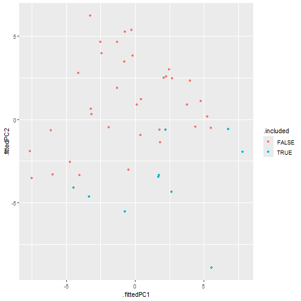
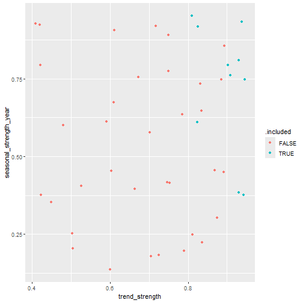
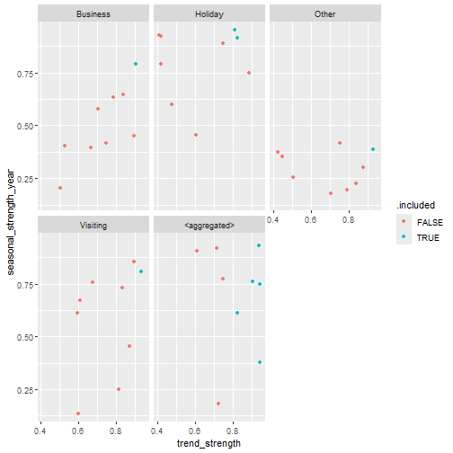

Introduction
Forecast reconciliation is used to make forecasts coherent across a
hierarchy or grouped structure. In the Australian tourism data, trips
can be aggregated by State, by Purpose, and by
their combinations. If forecasts are produced independently for each
series, the results will generally not add up correctly across the
structure.
This vignette demonstrates a workflow that goes a step further than
reconciliation alone. Alongside coherent forecasts, we also examine
which series are selected by icomb, and whether those
series exhibit distinctive time series characteristics.
The analysis proceeds in four stages:
construct a grouped tourism structure
fit base forecast models and reconcile the forecasts
extract series inclusion information from
icombrelate inclusion of series to feature-based summaries or accuracy of the series.
Workflow
Building a grouped tourism structure
We begin with the tourism dataset available in the
tsibble package and aggregate trips across the
State and Purpose dimensions to create a
simple grouped structure.
tourism_gts <- tourism |>
aggregate_key(State * Purpose,
Trips = sum(Trips))
tourism_gts
#> # A tsibble: 3,600 x 4 [1Q]
#> # Key: State, Purpose [45]
#> Quarter State Purpose Trips
#> <qtr> <chr*> <chr*> <dbl>
#> 1 1998 Q1 <aggregated> <aggregated> 23182.
#> 2 1998 Q2 <aggregated> <aggregated> 20323.
#> 3 1998 Q3 <aggregated> <aggregated> 19827.
#> 4 1998 Q4 <aggregated> <aggregated> 20830.
#> 5 1999 Q1 <aggregated> <aggregated> 22087.
#> 6 1999 Q2 <aggregated> <aggregated> 21458.
#> 7 1999 Q3 <aggregated> <aggregated> 19914.
#> 8 1999 Q4 <aggregated> <aggregated> 20028.
#> 9 2000 Q1 <aggregated> <aggregated> 22339.
#> 10 2000 Q2 <aggregated> <aggregated> 19941.
#> # ℹ 3,590 more rowsThis grouped structure contains the total, the marginal aggregates
(i.e., state level aggregates and purpose level aggregates), and the
bottom-level series defined by each State and
Purpose combination. These connected series form a natural
setting for forecast reconciliation.
Fitting base forecasts
We next fit an ETS model to every series in the grouped structure. You can fit any other univariate models or multivariate model(s).
fit <- tourism_gts |>
model(base = ETS(Trips))
fit
#> # A mable: 45 x 3
#> # Key: State, Purpose [45]
#> State Purpose base
#> <chr*> <chr*> <model>
#> 1 ACT Business <ETS(M,N,M)>
#> 2 ACT Holiday <ETS(M,N,A)>
#> 3 ACT Other <ETS(M,N,N)>
#> 4 ACT Visiting <ETS(M,N,N)>
#> 5 ACT <aggregated> <ETS(M,A,N)>
#> 6 New South Wales Business <ETS(M,N,A)>
#> 7 New South Wales Holiday <ETS(M,N,A)>
#> 8 New South Wales Other <ETS(A,N,N)>
#> 9 New South Wales Visiting <ETS(A,N,A)>
#> 10 New South Wales <aggregated> <ETS(A,N,A)>
#> # ℹ 35 more rowsThese are the base forecasts. Since each series is modelled independently, the forecasts are not guaranteed to be coherent with the aggregation constraints.
Reconciling base forecasts
We reconcile the base forecasts using two methods.
ols: MinT reconciliation with \mathbf{W}_h \propto \mathbf{I}icomb: theicombreconciliation method with group lasso penalty (default option)
fit_recon <- fit |>
reconcile(
ols = min_trace(base, method = "ols"),
icomb = icomb(base, train_size = 55)
)
fit_recon
#> # A mable: 45 x 5
#> # Key: State, Purpose [45]
#> State Purpose base ols icomb
#> <chr*> <chr*> <model> <model> <model>
#> 1 ACT Business <ETS(M,N,M)> <ETS(M,N,M)> <ETS(M,N,M)>
#> 2 ACT Holiday <ETS(M,N,A)> <ETS(M,N,A)> <ETS(M,N,A)>
#> 3 ACT Other <ETS(M,N,N)> <ETS(M,N,N)> <ETS(M,N,N)>
#> 4 ACT Visiting <ETS(M,N,N)> <ETS(M,N,N)> <ETS(M,N,N)>
#> 5 ACT <aggregated> <ETS(M,A,N)> <ETS(M,A,N)> <ETS(M,A,N)>
#> 6 New South Wales Business <ETS(M,N,A)> <ETS(M,N,A)> <ETS(M,N,A)>
#> 7 New South Wales Holiday <ETS(M,N,A)> <ETS(M,N,A)> <ETS(M,N,A)>
#> 8 New South Wales Other <ETS(A,N,N)> <ETS(A,N,N)> <ETS(A,N,N)>
#> 9 New South Wales Visiting <ETS(A,N,A)> <ETS(A,N,A)> <ETS(A,N,A)>
#> 10 New South Wales <aggregated> <ETS(A,N,A)> <ETS(A,N,A)> <ETS(A,N,A)>
#> # ℹ 35 more rowsThe icomb method with group lasso penalty is especially
useful for exploratory analysis because it allows us to study which
series are included in the information combination process.
Inspecting reconciliation output
To investigate the behaviour of icomb, we glance the
reconciliation results which provides .included variable
indicating which series are selected by icomb for
reconciliation.
glance_output <- fit_recon |>
glance()
glance_output
#> # A tibble: 135 × 12
#> State Purpose .model sigma2 log_lik AIC AICc BIC MSE AMSE MAE
#> <chr*> <chr*> <chr> <dbl> <dbl> <dbl> <dbl> <dbl> <dbl> <dbl> <dbl>
#> 1 ACT Business base 0.0540 -453. 919. 921. 936. 1069. 1071. 0.186
#> 2 ACT Business ols 0.0540 -453. 919. 921. 936. 1069. 1071. 0.186
#> 3 ACT Business icomb 0.0540 -453. 919. 921. 936. 1069. 1071. 0.186
#> 4 ACT Holiday base 0.0680 -463. 940. 941. 956. 1509. 1538. 0.189
#> 5 ACT Holiday ols 0.0680 -463. 940. 941. 956. 1509. 1538. 0.189
#> 6 ACT Holiday icomb 0.0680 -463. 940. 941. 956. 1509. 1538. 0.189
#> 7 ACT Other base 0.202 -376. 759. 759. 766. 154. 156. 0.366
#> 8 ACT Other ols 0.202 -376. 759. 759. 766. 154. 156. 0.366
#> 9 ACT Other icomb 0.202 -376. 759. 759. 766. 154. 156. 0.366
#> 10 ACT Visiting base 0.0305 -450. 905. 905. 912. 965. 1038. 0.128
#> # ℹ 125 more rows
#> # ℹ 1 more variable: .included <lgl>Computing time series features
To describe the series in the structure statistically, we compute a broad collection of features using feasts.
tourism_features <- tourism_gts |>
features(Trips, feature_set(pkgs = "feasts"))
tourism_features
#> # A tibble: 45 × 50
#> State Purpose trend_strength seasonal_strength_year seasonal_peak_year
#> <chr*> <chr*> <dbl> <dbl> <dbl>
#> 1 ACT Business 0.526 0.405 2
#> 2 ACT Holiday 0.603 0.453 1
#> 3 ACT Other 0.502 0.254 1
#> 4 ACT Visiting 0.600 0.136 0
#> 5 ACT <aggregated> 0.725 0.184 2
#> 6 New South Wales Business 0.785 0.635 3
#> 7 New South Wales Holiday 0.750 0.891 1
#> 8 New South Wales Other 0.874 0.303 2
#> 9 New South Wales Visiting 0.831 0.733 1
#> 10 New South Wales <aggregated> 0.908 0.760 1
#> # ℹ 35 more rows
#> # ℹ 45 more variables: seasonal_trough_year <dbl>, spikiness <dbl>, linearity <dbl>,
#> # curvature <dbl>, stl_e_acf1 <dbl>, stl_e_acf10 <dbl>, acf1 <dbl>, acf10 <dbl>,
#> # diff1_acf1 <dbl>, diff1_acf10 <dbl>, diff2_acf1 <dbl>, diff2_acf10 <dbl>,
#> # season_acf1 <dbl>, pacf5 <dbl>, diff1_pacf5 <dbl>, diff2_pacf5 <dbl>,
#> # season_pacf <dbl>, zero_run_mean <dbl>, nonzero_squared_cv <dbl>,
#> # zero_start_prop <dbl>, zero_end_prop <dbl>, lambda_guerrero <dbl>, …These features capture properties such as trend strength, seasonal strength, autocorrelation, linearity, and aspects of forecastability. See the online Forecasting: Principles and Practice textbook for a detailed description of these features.
Rather than inspecting dozens of features one at a time, it is often useful to summarise them in a smaller feature space.
Reducing the feature space with PCA
We use principal component analysis (PCA) to obtain a low-dimensional representation of the features.
pcs <- tourism_features |>
select(-State, -Purpose, -zero_run_mean, -zero_start_prop, -zero_end_prop) |>
prcomp(scale = TRUE) |>
broom::augment(tourism_features)
pcs
#> # A tibble: 45 × 96
#> .rownames State Purpose trend_strength seasonal_strength_year
#> <chr> <chr*> <chr*> <dbl> <dbl>
#> 1 1 ACT Business 0.526 0.405
#> 2 2 ACT Holiday 0.603 0.453
#> 3 3 ACT Other 0.502 0.254
#> 4 4 ACT Visiting 0.600 0.136
#> 5 5 ACT <aggregated> 0.725 0.184
#> 6 6 New South Wales Business 0.785 0.635
#> 7 7 New South Wales Holiday 0.750 0.891
#> 8 8 New South Wales Other 0.874 0.303
#> 9 9 New South Wales Visiting 0.831 0.733
#> 10 10 New South Wales <aggregated> 0.908 0.760
#> # ℹ 35 more rows
#> # ℹ 91 more variables: seasonal_peak_year <dbl>, seasonal_trough_year <dbl>,
#> # spikiness <dbl>, linearity <dbl>, curvature <dbl>, stl_e_acf1 <dbl>,
#> # stl_e_acf10 <dbl>, acf1 <dbl>, acf10 <dbl>, diff1_acf1 <dbl>, diff1_acf10 <dbl>,
#> # diff2_acf1 <dbl>, diff2_acf10 <dbl>, season_acf1 <dbl>, pacf5 <dbl>,
#> # diff1_pacf5 <dbl>, diff2_pacf5 <dbl>, season_pacf <dbl>, zero_run_mean <dbl>,
#> # nonzero_squared_cv <dbl>, zero_start_prop <dbl>, zero_end_prop <dbl>, …The coordinates .fittedPC1 and .fittedPC2
summarize the dominant variation across the extracted series
features.
Joining features, node inclusion, and accuracy
To compare statistical features with reconciliation behaviour, we join together
- the PCA representation
- the node inclusion indicator from
icomb, and - base-model accuracy measures
all_info <- glance_output |>
filter(.model == "icomb") |>
select(State, Purpose, .included) |>
full_join(pcs, by = c("State", "Purpose"))
all_info <- accuracy(fit) |>
select(-.model, -.type) |>
full_join(all_info, by = c("State", "Purpose"))
all_info
#> # A tibble: 45 × 105
#> State Purpose ME RMSE MAE MPE MAPE MASE RMSSE ACF1 .included
#> <chr*> <chr*> <dbl> <dbl> <dbl> <dbl> <dbl> <dbl> <dbl> <dbl> <lgl>
#> 1 ACT … Business 4.90 32.7 26.7 -1.52 18.6 0.703 0.739 0.0312 FALSE
#> 2 ACT … Holiday 3.63 38.9 28.5 -2.00 18.6 0.839 0.842 0.110 FALSE
#> 3 ACT … Other 1.32 12.4 10.2 -16.0 42.6 0.789 0.773 0.0614 FALSE
#> 4 ACT … Visiting 3.28 31.1 23.2 -0.622 12.2 0.684 0.704 0.0737 FALSE
#> 5 ACT … <aggregat… 7.91 60.9 49.0 0.0964 9.75 0.709 0.697 0.0913 FALSE
#> 6 New South… Business 9.69 128. 102. -0.0675 8.10 0.785 0.789 -0.0967 FALSE
#> 7 New South… Holiday 8.36 168. 136. -0.0168 4.56 0.805 0.785 0.00534 FALSE
#> 8 New South… Other 5.91 41.4 34.9 0.0551 12.1 0.851 0.828 -0.0737 FALSE
#> 9 New South… Visiting 13.9 151. 124. 0.202 5.21 0.696 0.699 0.0391 FALSE
#> 10 New South… <aggregat… 32.6 300. 243. 0.268 3.53 0.731 0.725 -0.0306 TRUE
#> # ℹ 35 more rows
#> # ℹ 94 more variables: .rownames <chr>, trend_strength <dbl>,
#> # seasonal_strength_year <dbl>, seasonal_peak_year <dbl>, seasonal_trough_year <dbl>,
#> # spikiness <dbl>, linearity <dbl>, curvature <dbl>, stl_e_acf1 <dbl>,
#> # stl_e_acf10 <dbl>, acf1 <dbl>, acf10 <dbl>, diff1_acf1 <dbl>, diff1_acf10 <dbl>,
#> # diff2_acf1 <dbl>, diff2_acf10 <dbl>, season_acf1 <dbl>, pacf5 <dbl>,
#> # diff1_pacf5 <dbl>, diff2_pacf5 <dbl>, season_pacf <dbl>, zero_run_mean <dbl>, …This gives a single data frame linking each series to its features, inclusion status, and forecast accuracy metrics.
Visualizing series inclusion in feature space
A useful first question is whether included and excluded series occupy different regions of the feature space.
tourism_viz <- all_info |>
ggplot(aes(
x = .fittedPC1,
y = .fittedPC2,
colour = .included,
text = paste0(
"PC1: ", round(.fittedPC1, 2), "<br>",
"PC2: ", round(.fittedPC2, 2), "<br>",
"State: ", State, "<br>",
"Purpose: ", Purpose, "<br>",
"MAPE: ", round(MAPE, 2), "<br>",
"RMSSE: ", round(RMSSE, 2), "<br>",
"MASE: ", round(MASE, 2)
)
)) +
geom_point()
tourism_viz
This plot provides a compact view of whether series inclusion in
icomb is associated with the broad statistical profile of a
series.
For interactive exploration in HTML output, the plot can also be converted with plotly.
tourism_viz |>
ggplotly(tooltip = "text")Examining interpretable features directly
While PCA is useful for summarizing many features at once, it is often easier to interpret individual features directly. Two especially common summaries are trend strength and annual seasonal strength.
tourism_feature_plot <- all_info |>
ggplot(aes(
x = trend_strength,
y = seasonal_strength_year,
colour = .included,
text = paste0(
"Trend_strength: ", round(trend_strength, 2), "<br>",
"Seasonal_strength_year: ", round(seasonal_strength_year, 2), "<br>",
"State: ", State, "<br>",
"Purpose: ", Purpose, "<br>"
)
)) +
geom_point()
tourism_feature_plot
This plot helps assess whether included series tend to be more strongly trended, more seasonal, or broadly similar to excluded series.
An interactive version can also be produced
tourism_feature_plot |>
ggplotly(tooltip = "text")Comparing behaviour across travel purpose
The relationship between structure and inclusion of series may differ
by travel purpose. To explore this, we facet the trend-seasonality
display by Purpose.
tourism_purpose_plot <- all_info |>
ggplot(aes(
x = trend_strength,
y = seasonal_strength_year,
colour = .included,
text = paste0(
"State: ", State, "<br>",
"Purpose: ", Purpose, "<br>")
)) +
geom_point() +
facet_wrap(vars(Purpose))
tourism_purpose_plot
An interactive version can also be produced when desired.
tourism_purpose_plot |>
ggplotly(text = "text")Interpreting the results
This workflow makes it possible to ask questions such as:
Do included series tend to be more regular or more forecastable?
Are highly seasonal series more likely to be selected by
icomb?Is inclusion associated with stronger or weaker base forecast accuracy?
Do patterns differ systematically across purpose groups?
The answers will depend on the data and the implementation details of
icomb, but the framework provides a practical way to
connect reconciliation output with interpretable series
characteristics.
Beyond summing constraints
The reconciliation methods discussed above are not limited to simple summation constraints. In general, both MinT based approaches and information combination methods can accommodate any linear constraints across a system of time series.
At present, the min_trace() implementation in
fabletools is restricted to summing constraints. The
icomb() approach, however, is more flexible and can be used
in settings where the aggregation structure is defined differently.
Using averages instead of sums
As an illustration, suppose the structure is defined in terms of
averages rather than totals. We can construct such a grouped
structure by aggregating using mean() instead of
sum().
tourism_avg_gts <- tourism_gts |>
filter(!is_aggregated(State), !is_aggregated(Purpose)) |>
aggregate_key(State * Purpose,
Trips = mean(Trips))We then fit and reconcile forecasts in the usual way.
fc <- tourism_avg_gts |>
model(base = ETS(Trips)) |>
reconcile(icomb = icomb(base, train_size = 55)) |>
forecast()To verify coherence under this alternative structure, we can recompute the averages from the bottom-level forecasts and compare them with the reconciled values.
fc |>
filter(!is_aggregated(State), !is_aggregated(Purpose), .model == "icomb") |>
aggregate_key(State * Purpose,
mean_fc = mean(.mean)) |>
full_join(fc |> filter(.model == "icomb")) |>
mutate(diff = mean_fc - .mean) |>
pull(diff) |>
range()
#> Joining with `by = join_by(Quarter, State, Purpose)`
#> [1] -6.821210e-13 9.094947e-13The range of differences is close to zero.
Current limitations and extensions
The current implementation of aggregate_key() in
fabletools does not yet support arbitrary weights,
which limits direct construction of more general linear constraints.
This is expected to be addressed in future releases.
In the meantime, for fully general linear constraints, a practical
approach is to manually construct a tsibble containing all
series in the desired structure and pass it directly to
model(). This provides complete flexibility in defining
relationships among the series.